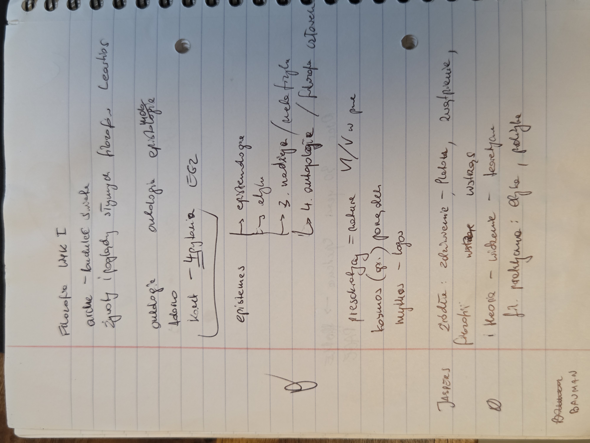

Filozofia – Wykład I
Wprowadzenie: skąd się wzięła filozofia, jej działy, Kant i Jaspers · EGZ = będzie na egzaminie
Moje notatki z wykładu
- arche – budulec świata
- Żywoty i poglądy słynnych filozofów – Laertios
- ontologia · ontologia · epistemologia (ontologia zapisana dwa razy)
- Adorno
- Kant – 4 pytania EGZ
- episteme → 1. epistemologia · 2. etyka · 3. nadzieja / metafizyka · 4. antropologia / filozofia człowieka
- presokratycy = natura, VI/V w. p.n.e.
- kosmos (gr.) – porządek
- mythos – logos
- Jaspers – źródła filozofii: zdziwienie (Platon), zwątpienie, wstrząs
- theoria – widzenie – teoretyczna; fil. praktyczna: etyka, polityka
- Bauman
📷 Pokaż oryginalne zdjęcie notatek

Początki filozofii
- Presokratycy (VI–V w. p.n.e.) to pierwsi filozofowie greccy, działający przed Sokratesem. Badali naturę (physis φύσις) i szukali arche.
- Kosmos (kosmos κόσμος) znaczy porządek. Świat jest uporządkowaną całością, którą da się poznać rozumem. Stąd też „kosmetyka”, czyli porządkowanie wyglądu.
- Od mythosu do logosu: przejście od tłumaczenia świata mitami do tłumaczenia go argumentem. Ten moment uważa się za narodziny filozofii.
- Diogenes Laertios (III w. n.e.) napisał Żywoty i poglądy słynnych filozofów. To główne źródło naszej wiedzy o starożytnych filozofach, pełne anegdot i plotek.
Działy filozofii
| Dział | Pyta o… | Skąd nazwa |
|---|---|---|
| Ontologia | byt: co istnieje i czym jest „bycie” | on, ontos ὄν, ὄντος (byt) + logos λόγος |
| Epistemologia | poznanie: co i jak możemy wiedzieć | episteme ἐπιστήμη (wiedza) + logos λόγος |
| Metafizyka | to, co „poza” fizyką: Bóg, dusza, sens | meta ta physika μετὰ τὰ φυσικά („po fizyce”) |
| Etyka | jak należy postępować | ethos ἦθος (obyczaj, charakter) |
| Antropologia | czym jest człowiek | anthropos ἄνθρωπος (człowiek) + logos λόγος |
| Polityka | jak urządzić wspólnotę i państwo | polis πόλις (miasto-państwo) |
„Metafizyka” to przypadek bibliotekarza. Andronikos z Rodos, wydawca Arystotelesa, ułożył jego teksty o „pierwszych przyczynach” po tekstach o fizyce i nazwał je ta meta ta physika, czyli „to, co po fizyce”. Dopiero później słowo zaczęło znaczyć „to, co ponad fizyką”.
Kant – 4 pytania filozofii EGZ
Do wykucia na egzamin:
- Co mogę wiedzieć? → epistemologia (metafizyka)
- Co powinienem czynić? → etyka
- Czego mogę się spodziewać? (na co mogę mieć nadzieję?) → religia
- Czym jest człowiek? → antropologia, i do niego sprowadzają się trzy pierwsze
Sposób na zapamiętanie: WIEDZA → CZYN → NADZIEJA → CZŁOWIEK. Głowa, ręce, serce, a na końcu cały człowiek.
Wersja z notatek grupy (22.10) różni się w szczegółach: 1) Co mogę wiedzieć? → epistemologia (teoria poznania); 2) Co powinienem czynić? → etyka (powinność); 3) Czego mogę się spodziewać? → metafizyka (pytanie o nadzieję); 4) Kim jest człowiek? → z Kanta „Wykładów logiki”. Trzy pierwsze pytania są w Krytyce czystego rozumu, czwarte doszło w wykładach z logiki. Sam Kant przypisywał trzecie pytanie religii, a czwarte antropologii. Na teście trzymaj się wersji prowadzącej (metafizyka), a jeśli pytanie dopuszcza obie, wspomnij religię.
Skrót prowadzącej: powinność → zawsze etyka (odpowiedź etyczną trzeba uzasadnić); pytania o sens → metafizyka; niesprzeczność → logika; teoria poznania → epistemologia.
Uzupełnienia z notatek grupy
Zaliczenie: test, ok. 50 pytań, mieszany. Obecności niewymagane.
| Pojęcie | Znaczenie |
|---|---|
| transhumanizm | próba przezwyciężenia biologicznych ograniczeń człowieka za pomocą nowoczesnych technologii i nauki |
| antropocen | epoka, w której to człowiek, a nie natura, zmienia świat; pierwsza taka epoka |
| philo + sophia | kochać + mądrość. Słowo „filozofia” przypisuje się Pitagorasowi: umiłowanie mądrości, dążenie do niej |
| filozofia | dziedzina wiedzy; pyta o ogół, a nie szczegół; pytania abstrakcyjne i ogólne; kilka niewykluczających się odpowiedzi i różne interpretacje |
| pytania metafizyczne | wykraczają poza fizykę, np. jak doszło do Wielkiego Wybuchu? |
| sofista | sophistes: mistrz w mądrości (sophia) |
Filozofia jako…
| Ujęcie | Na czym polega |
|---|---|
| nauka (theoria = widzenie) | filozofia przedsokratejska; punkt wyjścia to przedmiot, świat, rzeczywistość; odrzucenie subiektywizmu, nastawienie na obiektywność (dziś: filozofia analityczna) |
| oświecenie | osoba filozofująca zajmuje się samą sobą; „oświecenie jest utratą naiwności” |
| praktyka | pragmatyzm, myśl krytyczna |
Paradygmaty filozoficzne EGZ
| Paradygmat | Główne pytanie |
|---|---|
| ontologiczny (gr. to on = to, co jest, byt) | Co to jest? Teoria bytu, wyjście od przedmiotu (np. Platon, V/IV w. p.n.e.). To, co poznajemy, musi być. |
| zwątpienia (mentalistyczny) | Skąd wiem, że to, co widzę, jest prawdziwe? |
| lingwistyczny (językowy) | Pytania o język: język nie jest przezroczysty. „Granice mojego języka są granicami mojego świata” (Wittgenstein). |
Z nagrania wykładu
- Etymologię „filozofii” jako umiłowania mądrości podkreślali m.in. Kazimierz Ajdukiewicz i Diogenes Laertios, który cytuje Pitagorasa.
- Theodor Adorno porównuje filozofa do dziecka, które zadaje fundamentalne pytania o świat. W tym kontekście padło nazwisko Adorno. Ważne jest nie tylko znajdowanie odpowiedzi, ale samo zadawanie pytań.
- Źródła filozofii według Jaspersa w wersji z nagrania: zdziwienie, wątpienie, cierpienie (cierpienie = wstrząs w sytuacjach granicznych).
- „Oświecenie to utrata naiwności” to słowa Maxa Horkheimera.
| Filozofia jako… | Punkt wyjścia | Pytanie |
|---|---|---|
| nauka (theoria: widzenie, oglądanie) | przedmiot: świat, rzeczywistość; obiektywność | Co jest? |
| oświecenie (samopoznanie) | osoba filozofująca i jej odniesienie do siebie; samoprzemiana | Kim jest człowiek? |
| Paradygmat | Opis | Pytanie |
|---|---|---|
| ontologiczny (to on = byt) | teoria bytu, wyjście od przedmiotu; Platon | Co jest? |
| mentalistyczny (łac. mens = umysł) | teoria poznania; od Kartezjusza (XVII w.) zwrot ku świadomości, ku „Ja”; początkiem jest zwątpienie (Kartezjusz: cogito ergo sum, złośliwy demon, genius malignus); Kant bada subiektywne warunki poznania | Co mogę wiedzieć? |
| lingwistyczny | język nie jest przezroczysty; „granice mojego języka są granicami mojego świata” (Wittgenstein) | Co i jak mogę powiedzieć? |
Paradygmat „zwątpienia” z notatek grupy to ten sam paradygmat mentalistyczny. Zmiana paradygmatu idzie od bytu do świadomości, a potem do języka.
W notatkach grupy: „Theodor Adorno stworzył szkołę filozoficzną we Francji, odrzucał krytykę”. To się nie zgadza. Adorno współtworzył szkołę frankfurcką w Niemczech i był twórcą teorii krytycznej, czyli krytykę wręcz uprawiał (opis wyżej).
Jaspers – źródła filozofowania
Karl Jaspers (1883–1969), niemiecki egzystencjalista, z wykształcenia psychiatra. Wskazał trzy źródła, z których bierze się filozofia:
- Zdziwienie: już Platon i Arystoteles mówią, że filozofia zaczyna się od zdziwienia światem.
- Zwątpienie: metodyczne wątpienie we wszystko, typowe dla Kartezjusza („wątpię, więc myślę, więc jestem”).
- Wstrząs: zderzenie z sytuacjami granicznymi (śmierć, cierpienie, wina, walka). Człowiek uświadamia sobie wtedy własną skończoność.
Źródło ≠ początek
Początek
Historyczny: kiedy filozofia się zaczęła. Grecja, VI w. p.n.e., presokratycy, przejście od mythosu do logosu.Źródło
Ponadczasowe: dlaczego ludzie filozofują, wtedy i dziś. Zdziwienie, zwątpienie, wstrząs.A arche to jeszcze coś innego: pierwsza zasada świata (z czego wszystko jest), a nie filozofii.
Theoria – widzenie
theoria θεωρία pierwotnie znaczyła oglądanie, np. widowiska w teatrze. Filozofia teoretyczna „ogląda” prawdę dla niej samej. Praktyczna (praxis πρᾶξις) pyta, jak działać: to etyka i polityka.
Nazwiska z wykładu
Theodor W. Adorno (1903–1969), niemiecki filozof i socjolog, szkoła frankfurcka, teoria krytyczna.
- Z Horkheimerem napisał Dialektykę oświecenia. Teza: rozum, który miał wyzwolić człowieka, stał się narzędziem panowania i może prowadzić do barbarzyństwa (Holokaust).
- Przemysł kulturowy: masowa kultura produkowana jak towar usypia krytyczne myślenie.
- „Pisać wiersz po Auschwitz jest barbarzyństwem.”
- Był też muzykologiem i kompozytorem.
Zygmunt Bauman (1925–2017), polski socjolog i filozof, wykładał w Leeds. Autor pojęcia „płynna nowoczesność”: dziś nic nie jest trwałe (praca, związki, tożsamość), wszystko jest tymczasowe i zmienne.
❓ W jakim kontekście prowadząca ich wspomniała? Do uzupełnienia z konspektu.
🏛️ Greka z tego wykładu
Większość nazw w filozofii i spora część prawniczych to greckie klocki. Jak znasz klocki, rozumiesz słowa.
Rozbiór słów
Słowniczek
⚖ Greka w prawie
Sofiści (zaraz po presokratykach) spierali się, czy prawo i moralność wynikają z natury (physis φύσις), czy z umowy ludzi (nomos νόμος). To pierwszy spór filozofii prawa i będzie wracał na prawie natury vs pozytywizmie prawniczym.
🔤 Ściąga: alfabet grecki
Znaczki nad literami (ἀ, ῦ, ή) to akcenty i „przydechy”. Na razie możesz je ignorować: ἀρχή czytasz po prostu „arche”.
🃏 Fiszki
Kliknij kartę albo naciśnij spację, żeby ją odwrócić. Strzałki ← → przełączają karty. „Umiem” zapamiętuje się w tej przeglądarce.